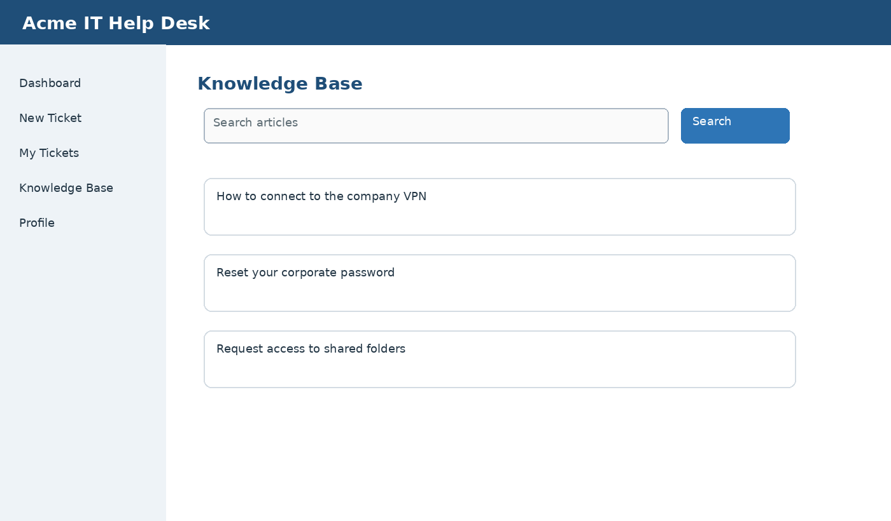

Search the Knowledge Base
Search the Knowledge Base before submitting a ticket to find solutions for common issues.
- Select Knowledge Base.
- Enter one or more keywords describing the issue.
- Select Search.
- Open an article that matches your issue.

Figure 4. Search the Knowledge Base